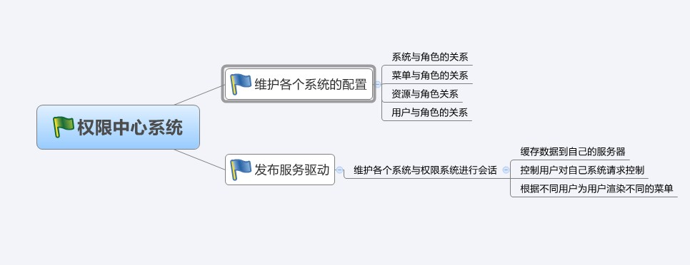
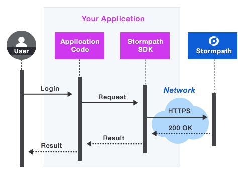
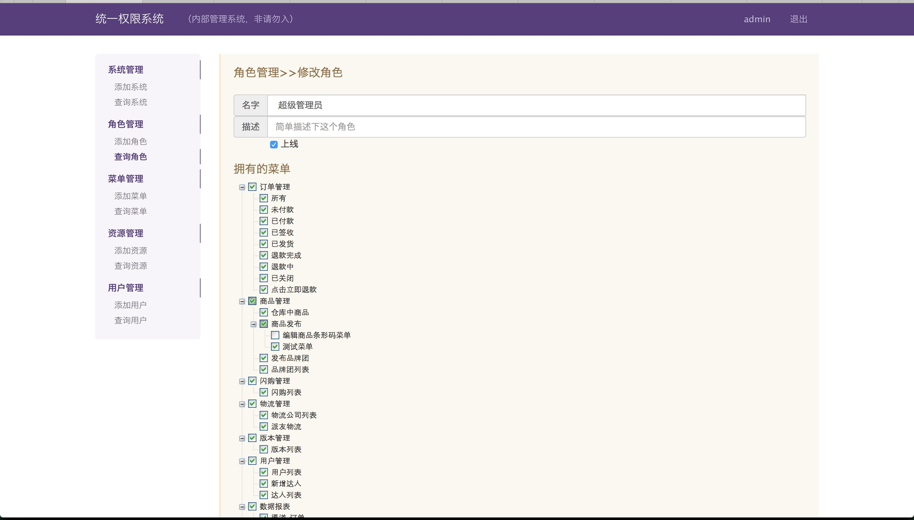

这是一个统一管理系统权限，设计的目标是给开发者一个完整地权限管理系统，以便你能更专注自己系统业务的开发
- 统一配置界面
- 简洁的客户端SDK包
- SDK包支持不同语言系统
- 粒度随意掌控，可大可小
- 易扩展
- 支持spring



Github：https://github.com/WangJunTYTL/authmanage tar.gz .zip
- 运行之前请先安装maven和git
- 将代码clone到本地后，需要先修改./auth-web/src/man/filters/dev.properties,配置你自己的数据库连接
- 执行sh run.sh，成功启动后访问 http://localhost:8888，如果看到登陆页面，说明程序启动成功
- 关于登陆账号，请继续向下看数据库创建
当程序第一次成功启动后，会自动在你配置的数据库中创建数据表，你需要administrator表添加一对账号和密码 作为你当前的登陆账号，现在一个完整地权限中心已经运行起来了，接下来请看客户端SDK的介绍
<groupId>com.peaceful</groupId> <artifactId>nuggets-auth-sdk</artifactId> <version>1.0-SNAPSHOT</version>
auth.app.id=1 #客户端在服务中心注册id auth.service.address=http://10.10.1.110:8080 #服务中心地址 auth.user.session.out.time=2 #user info 缓存时间 auth.system.session.out.time=300 #system info 缓存时间 auth.context.impl.class=xxx #实现AuthContext抽象类的路径，这个是可选配置
AuthService authService = AuthServiceImpl.getAuthService();
getSystem() 获得客户端在权限中心注册的所有配置信息 getUser(String email) 获得客指定用户的所有配置信息 有了这两个接口你就可以很方便的进行扩展，因为通过这两个接口你拿到的基本上是所有配置信息，此外，不要担心性能问题，因为通过这两个接口拿到的 数据会缓存在客户端的服务器，你也没必要担心缓存数据过时问题，因为客户端会实时监测服务中心数据配置的变化，若有变化，客户端会立即重新加载缓存
下面是一个样例，会根据客户端系统的当前登录是否在页面渲染menuKey=goods的按钮，按钮的样式是bootstrap3.3版本定义，这需要根据你自己的系统 具体定制，具体样例参照类 MenuUtils
<%@taglib uri="http://com.peacuful.com/auth/menu" prefix="menu" %> <menu:menu menuKey="goods" menuLevel="L1">
下面是一个样例，会根据客户端系统的当前登录用户决定是否可以请求addMeta controller
@AUTH.Function({"goods,mall"}) @AUTH.Role("admin") @RequestMapping(value = "/item/xxx", method = {RequestMethod.POST}) public void addMeta(HttpServletRequest request, HttpServletResponse response) { ... }